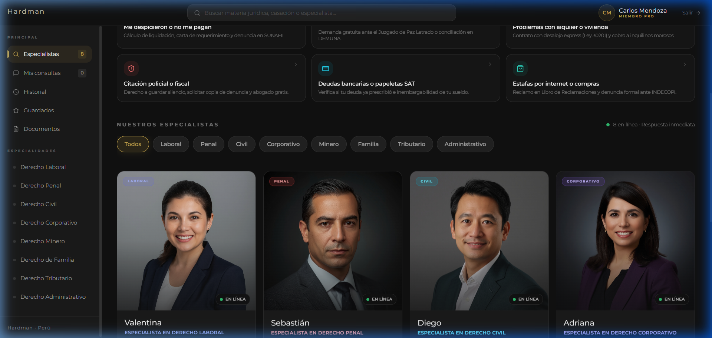
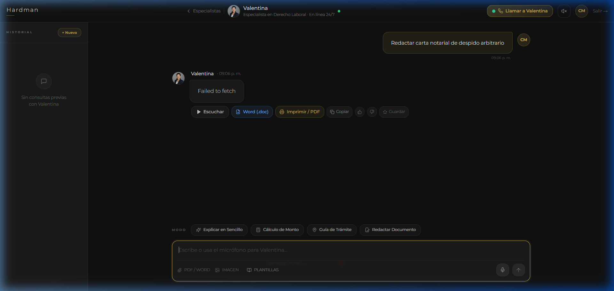
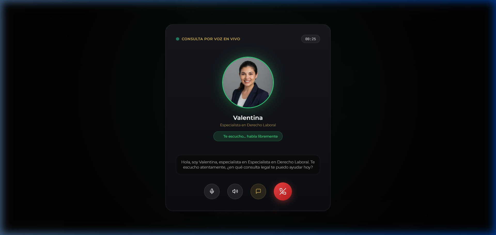

Una suite integral de 8 especialistas jurÃdicos con IA para litigar, redactar demandas completas en Word (.docx), calcular liquidaciones laborales, realizar dictado por voz en tiempo real y analizar expedientes judiciales.

Capturas reales del sistema en acción durante consultas procesales.
Navega entre despachos de Derecho Laboral, Penal, Civil, Corporativo, Minero, Familia, Tributario y Administrativo con derivación automática.

Redacción formal de demandas con petitorio numerado, fundamentos y medios probatorios con descarga directa en archivo editable .docx.

Habla directamente con el especialista legal mediante reconocimiento de voz en tiempo real y sÃntesis neural fluida.
Perfiles con especialización dogmática, procesal y jurisprudencial peruana.
Relaciones Laborales & NLPT
D.L. 728, despidos arbitrarios, indemnizaciones, liquidación de CTS, Ley 32155 y defensa ante SUNAFIL.
Defensa Técnica & NCPP
Oposición a prisión preventiva (Art. 268 NCPP), control de plazos, tutela de derechos y carpetas fiscales.
Contratos & Inmobiliario
Minutas de compraventa, desalojo con allanamiento futuro (Ley 30933), derechos reales y garantÃas.
M&A, Sociedades & Due Diligence
Ley General de Sociedades 26887, convenios de socios, fusiones, reorganizaciones y compliance (Ley 30424).
INGEMMET, OEFA & REINFO
TUO Ley General de MinerÃa, concesiones, fiscalizaciones OEFA, permisos SENACE y servidumbres.
Alimentos & Tenencia
Pensión de alimentos, asignación anticipada, tenencia compartida (Ley 31590) y divorcios.
SUNAT & Tribunal Fiscal
Fiscalizaciones SUNAT, reparos de Renta/IGV, recursos de reclamación y apelación RTF.
LPAG & Contrataciones
TUO Ley 27444 (D.S. 006-2026-JUS), Procedimientos Sancionadores (PAS) y Contencioso.
Toca una consulta para ver cómo fundamenta el caso y genera el escrito formal.
1. DIAGNÓSTICO JURÃDICO: Al ser un contrato indeterminado sin causa justa demostrada, se configura un despido arbitrario incausado bajo el Art. 34 y 38 del D.L. 728.
2. LIQUIDACIÓN DE INDEMNIZACIÓN EXACTA:
• Indemnización por despido: 1.5 remuneraciones por año laborado (1.5 × S/ 3,500 = S/ 5,250 por año). Por 3 años: S/ 15,750 (tope máx. 12 sueldos).
• Liquidación de beneficios truncos (CTS, Gratificación trunca y vacaciones no gozadas).
Construido bajo protocolos internacionales de protección de datos procesales.
Cifrado TLS 1.3, contraseñas protegidas con Bcrypt y polÃticas de cabecera HSTS forzadas.
Arquitectura stateless capaz de sostener más de 10,000 consultas simultáneas con latencias < 400 ms.
Tus casos y documentos nunca se comparten ni se usan para entrenar modelos públicos.
Agenda una sesión de demostración personalizada para tu estudio jurÃdico o solicita credenciales de acceso para tu equipo de abogados.